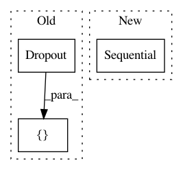

565960370df285169f4a2b2a7368e3d9f07e6617,tasks/imdb_tcn.py,,,#,15
Before Change
x = TCN(nb_filters=64,
kernel_size=6,
dilations=[1, 2, 4, 8, 16, 32, 64])(x)
x = Dropout(0.5)(x)
x = Dense(1, activation="sigmoid")(x)
model = Model(inputs=[i], outputs=[x])
model.summary()
After Change
y_train = np.array(y_train)
y_test = np.array(y_test)
model = Sequential([
Embedding(max_features, 128, input_shape=(maxlen,)),
TCN(kernel_size=6, dilations=[1, 2, 4, 8, 16]),
Dense(1, activation="sigmoid")
])
print(f"TCN receptive field: {model.layers[1].receptive_field}.")
model.summary()
In pattern: SUPERPATTERN
Frequency: 3
Non-data size: 3
Instances
Project Name: philipperemy/keras-tcn
Commit Name: 565960370df285169f4a2b2a7368e3d9f07e6617
Time: 2021-03-09
Author: premy.enseirb@gmail.com
File Name: tasks/imdb_tcn.py
Class Name:
Method Name:
Project Name: philipperemy/keras-tcn
Commit Name: 0cfe82c6beb9a28a5ff7da81b86fa0e93c388f14
Time: 2019-11-20
Author: premy@cogent.co.jp
File Name: tasks/save_reload_model.py
Class Name:
Method Name:
Project Name: layumi/Person_reID_baseline_pytorch
Commit Name: 36746abd7a63a2804b256d870ab81a36f7ccd105
Time: 2018-04-16
Author: Zhedong.Zheng@student.uts.edu.au
File Name: model.py
Class Name: ft_net_dense
Method Name: __init__